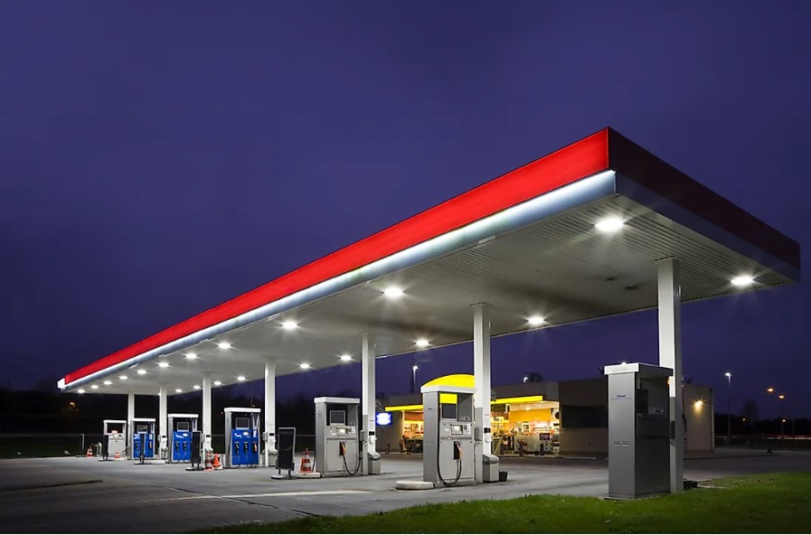
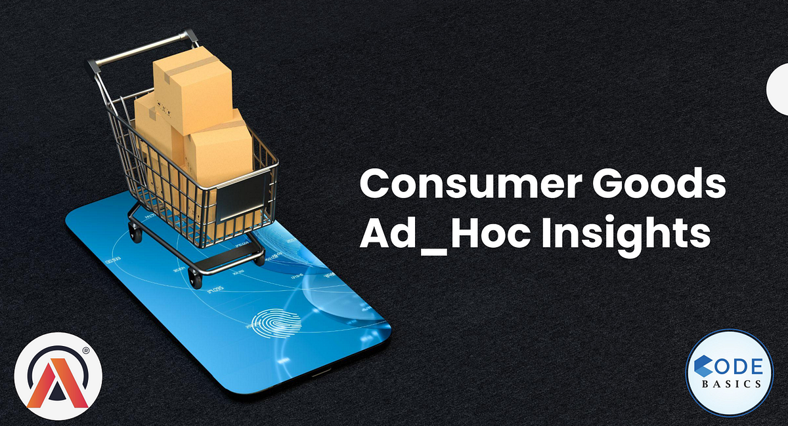
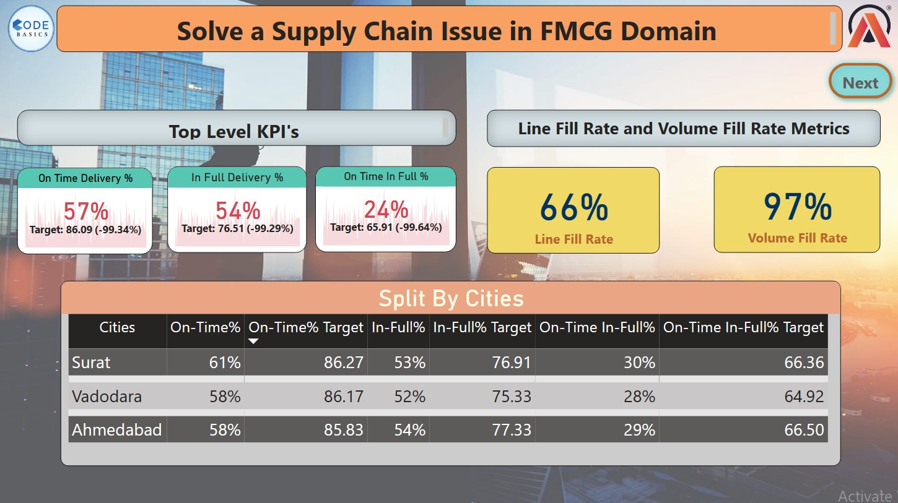

I have gathered and cleaned COVID-19 data for Pakistan from the John
Hopkins University Github repository. Conducted exploratory data analysis
and statistical analysis to understand COVID-19 trend in Pakistan.
Developed a user-friendly Streamlit app to visualize and disseminate insights.
Tools Used: Python

In this project, I have conducted Exploratory Data Analysis
on historical asia cup matches from 1984 to 2018.
Tools Used: Python

In this project, I did Exploratory Data Analysis and Data Visualization of petrol/gas price worldwide, world share
and consumption per capita. We will deep dive into the dataset to view the fuel prices
worldwide, GDP per capita, GDP per capita a country can buy and how many times yearly gallons per capita a country can buy.
Tools Used: Python

Provided valuable insights to management in the consumer domain by running SQL queries for 10 ad-hoc
requests.
Tools Used: MySQL Workbench, MySQL, Excel, Powerpoint

I have scraped the real-time data of daily stock prices of Apple licensed under NASDAQ
from Alpha Vintage API using Python and Analyzed in Microsoft Excel.
I have done exploratory data analysis using descriptive statistics, the correlation between
the variables, trend analysis, pivot table to know about the average prices and volume (i.e. Number of Shares)
, and hypothesis testing to find the impact of opening price on a number of shares.
Tools Used: Python, Microsoft Excel, Microsoft Powerpoint, ChatGPT

Made an interactive Power BI dashboard to solve problem in FMCG domain which AtliQ Mart
is facing and measure their key performance indicators which are
On-time delivery (OT) %, In-full delivery (IF) %, and OnTime in full (OTIF) %.
Tools Used: Microsoft Power BI, Power Query